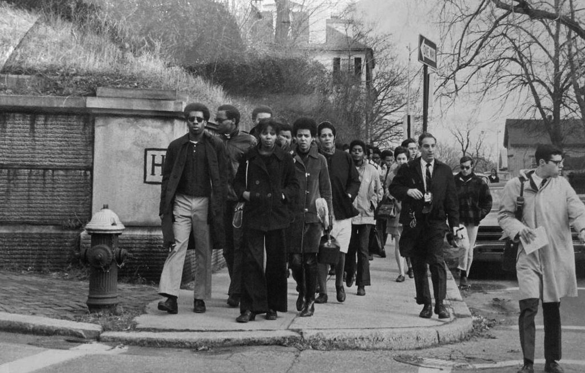

On December 10 and 11, 1969, black students boycotted classes in a protest aimed at an agreement of specific goals to increase black faculty and administrators. This protest was successful in increasing the number of black administrators and faculty. The affirmative action report required by the federal government in 1972 indicated that Brown had 19 black faculty members out of a total of 607. The number of black students had risen from 85 (2.3 per cent) in 1968 to 417 (8.9 per cent) in 1972. source
"In the hyper-competitive landscape of present-day higher education, Brown University most distinguishes itself from other elite universities by its open curriculum, according to which students have no requirements placed on their learning besides a writing requirement and the requirements of their intended concentration. This open curriculum can be said to form one of two components of Brown’s self-identity as an educational institution dedicated to what it calls ‘liberal learning’ . The other component is DIAP, or the diversity inclusion and action program, inaugurated in 2016 by President Christina Paxson, with the purpose of dealing with ‘long standing issues concerning diversity and inclusion in the Brown curriculum and academic environment’1 . This component, rather than distinguishing Brown, brings it closer with other universities which have undertaken diversity programs in recent years. It is well known to most people at Brown that both of these components did not start on Brown’s own initiative, but have their antecedents in a set of twin student movements that occurred at Brown in late 1968: the movement for curricular reform on the one hand, and the Black student walkout on the other. In its promotion of the open-curriculum and DIAP, Brown now claims these two legacies proudly, even though, as most of you may know, they caused the administration a considerable amount of consternation in their own day. But how exactly did two divergent but connected movements, which caused Brown such a headache in 1968, eventually become the sources by which it would come to define and distinguish itself as a liberal university?"
Link to full essay